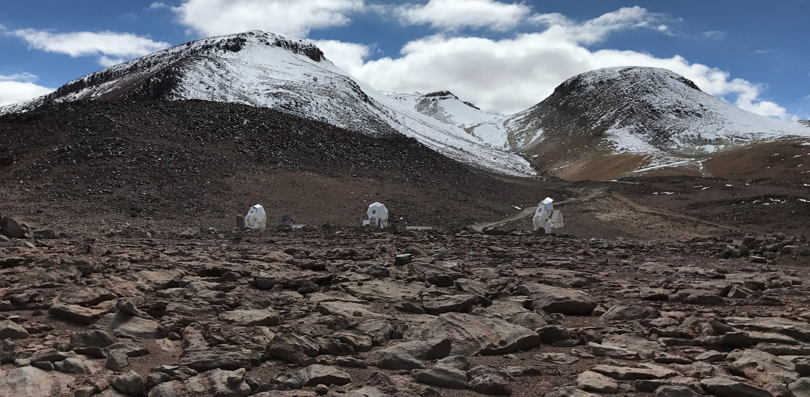

The Simons Array
The Simons Array is a ground-based cosmic microwave background (CMB) observatory consisting of three medium-sized (3 meter primary mirror) observing now from the Atacama desert in northern Chile. It is based off the heritage of the successful POLARBEAR experiment, which observed from 2012-2017 and was the first to directly measure the B-mode polarization power spectrum in the CMB and to perform a data analysis technique known as de-lensing without relying on external data, among many other exciting results.

Photo: Seth Pransky
One of the main advances over POLARBEAR which the Simons Array pushed is in wavelength coverage. While POLARBEAR observed in a single frequency band centered at 150 GHz, the Simons Array design includes four non-overlapping frequency bands centered at 90 GHz, 150 GHz, 220 GHz, and 270 GHz. Such wide frequency coverage gives an important lever arm to distinguish the primordial CMB from other sources of radiation in our own galaxy such as spinning dust and charged particles.
Another key technology direction with the Simons Array was to increase raw sensitivity. The detector count was expanded from roughly 1,000 in POLARBEAR to roughly 21,000. Such a large increase necessitated many developments in scalable, modular, high-throughput production of Transition-Edge Sensor (TES) bolometers and their supporting cryogenic and electronic infrastructure. Below are a few images of one modular detector package containing over 1,000 TES bolometers, the focal plane array of a single telescope containing over 7,000 detectors, and the cryostat which houses one such array and sits behind the mirrors in each telescope (with a human - me - for scale).


Middle photo from Ito et al. (2020)
My contributions to the Simons Array involved lots of development for the cryogenic embedding of the detector arrays and the multiplexed readout electronics. I also contributed centrally to the integration and commissioning of the first of its three telescopes at its observing site at 17,000' elevation in Chile.